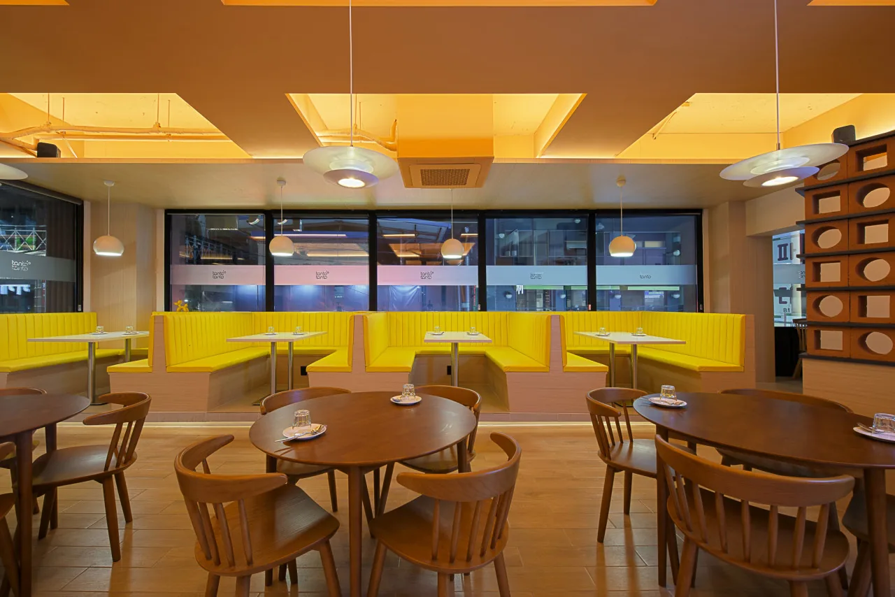

TantoTanto 탄토탄토
Italian restaurant · 5 min from Konkuk Univ. Station, Seoul
TantoTanto (탄토탄토) is a bright, casual Italian restaurant near Konkuk University Station in Gwangjin-gu, Seoul. We serve pasta, risotto and steak made for sharing, under orange lights with a long yellow sofa by the windows. Wine and sake are corkage-free.
Visit information
- Address
- 2F, 49 Achasan-ro 33-gil, Gwangjin-gu, Seoul
서울 광진구 아차산로33길 49 2층 - Nearest station
- Konkuk Univ. Station (Line 2 & 7), Exit 2 — 5-minute walk, about 350 m
- Hours
- Daily 11:00–22:00, no regular closing day
- Break time
- Mon–Fri 15:00–17:00 · Sat–Sun 15:00–16:00
- Last order
- Lunch 14:30 (weekdays) / 14:50 (weekends) · Dinner 20:50
- Price
- About KRW 10,000–30,000 per person. Pasta from KRW 14,800, House Steak KRW 32,800
- Reservations
- CatchTable or Naver, up to 6 guests. For 7 or more, call +82-2-2039-2915
- Corkage
- Free for wine and sake · whisky KRW 30,000 per bottle
- Kids
- Welcome, high chairs available
- Parking
- No private parking. Paid public lot nearby (Hanareum 528 / 한아름 528주차장)
- Phone
- +82-2-2039-2915
How to get here
- Take Exit 2 of Konkuk Univ. Station and walk straight along the main road, past Olive Young, Baskin Robbins and Daiso.
- At Mega MGC Coffee (메가MGC커피), turn left into the side street at the crosswalk corner.
- At Siseon (시선), turn right and walk up a little.
- TantoTanto is on the 2nd floor of the building on your left. About 5 minutes in total.
Menu
Korean names are shown so you can point to them when ordering. Prices include VAT.
Signature dishes

Striploin Steak Cream Pasta 채끝스테이크 크림
Spicy cream tagliatelle topped with 100 g of striploin. Our best seller.
KRW 19,800
Shakshuka 샥슈카(에그인헬)
Spicy tomato sauce with short pasta and three poached eggs, served with baguette.
KRW 19,800
Myeongran Aglio e Olio 명란 알리오올리오
Salty pollock roe and shishito peppers in olive oil. Light, not greasy.
KRW 15,800
Brie & Basil Gnocchi 브리&바질 뇨끼
Basil gnocchi with brie cheese and sun-dried tomatoes.
KRW 18,800
House Steak 하우스 스테이크
200 g Australian striploin with grilled vegetables.
KRW 32,800
Full menu
Pasta
| Minari Vongole미나리 봉골레 | KRW 18,800 |
| Black Truffle Cream Pasta블랙트러플 크림 | KRW 21,800 |
| Lasagna라자냐 | KRW 19,800 |
| Truffle Aglio e Olio트러플 알리오올리오 | KRW 15,800 |
| Toowoomba Pasta투움바 | KRW 15,800 |
| Spicy Cream Pasta스파이시 크림 파스타 | KRW 14,800 |
| Scallop Cream Pasta관자 크림 파스타 | KRW 18,800 |
| Burrata Pomodoro부라타치즈 뽀모도로 | KRW 18,800 |
| Salmon Steak Rosé Pasta연어스테이크 로제 | KRW 17,800 |
| Seafood Tomato Pasta해산물 토마토 | KRW 17,800 |
| Shrimp Rosé Pasta쉬림프 로제 파스타 | KRW 15,800 |
Rice & Risotto
| Tanto Kimchi Fried Rice탄토 김치볶음밥 | KRW 16,800 |
| Minari Steak Rice Pot미나리 스테이크 솥밥 | KRW 22,800 |
| Tomato Steak Risotto토마토 스테이크 리조또 | KRW 19,800 |
| Scallop Rosé Risotto관자 로제 리조또 | KRW 18,800 |
| Perilla Cream Risotto들깨 크림 리조또 | KRW 17,800 |
Steak, Salad & Tapas
| BBQ Chop Steak & Truffle FriesBBQ찹스테이크 & 트러플감자튀김 | KRW 18,800 |
| Black Pepper Chop Steak & Truffle Fries블랙페퍼 찹스테이크 & 트러플감자튀김 | KRW 18,800 |
| Gambas al Ajillo감바스 | KRW 13,800 |
| Steak Salad스테이크 샐러드 | KRW 17,800 |
| Seasonal Fruit & Ricotta Salad계절과일 & 리코타 샐러드 | KRW 12,800 |
| Burrata Rucola Salad부라타 루꼴라 샐러드 | KRW 14,800 |
FAQ
Do I need a reservation?
Walk-ins are welcome, but weekend evenings fill up. Book on CatchTable or Naver for up to 6 guests, or call +82-2-2039-2915 for 7 or more.
Can I order without speaking Korean?
Yes. Every dish on this page is listed with its Korean name, so you can show it to our staff.
Can I bring my own wine?
Yes. Corkage is free for wine and sake. Whisky is KRW 30,000 per bottle.
Is it good for kids?
Yes. Kids are welcome and we have high chairs.
How much does a meal cost?
Most guests spend KRW 10,000–30,000 per person. Pasta starts at KRW 14,800 and the House Steak is KRW 32,800.
Find us online
Google MapsNaver MapCatchTable (booking)Instagram한국어 (tantotanto.store)